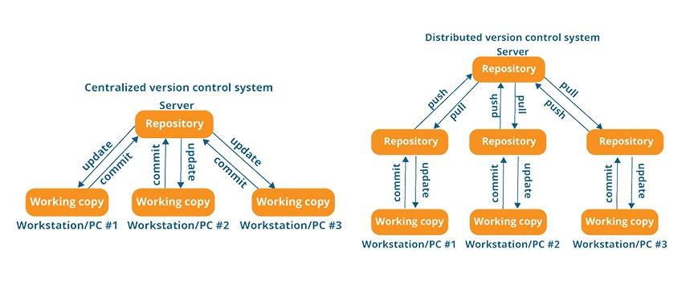

Mastering Git
The Comprehensive Guide to Modern Version Control
01
The VCS Paradigm
Understanding why we track code and how systems evolved.
What is Version Control?
Snapshots
Unlike simple backups, VCS stores "Snapshots" of your entire project state. You can revert back to any exact second in history.
Collaboration
Allows multiple developers to work on the same codebase simultaneously without overwriting each other's work.

Distributed vs. Centralized
| Feature | Centralized (SVN) | Distributed (Git) |
|---|---|---|
| Work Offline | Impossible | Fully Supported |
| Speed | Network Dependent | Nearly Instant |
| Safety | Single Point of Failure | Full Mirror Everywhere |
Market Dominance (2025)
Git is no longer an option—it is the industry standard for software engineering.
02
History & Origins
From a crisis in the Linux Kernel to global dominance.
Born in 2005
After the BitKeeper license was revoked, **Linus Torvalds** famously spent two weeks building the first prototype of Git.
His requirements were uncompromising:
- Non-linear development
- Efficient handled huge projects
- Absolute data integrity
Key Milestones
2005
Git v1.0 Released
2008
GitHub Launches
2014
Git v2.0 Standard
2025
Cloud Native Git
Core Philosophies
Performance
Nearly all operations happen on your local filesystem, avoiding network latency for commit/diff/log.
Data Integrity
Everything is SHA-1 hashed. If data is corrupted, Git will know immediately.
Cheap Branches
Git branches are just pointers. Creating a new feature branch takes 1 millisecond.
03
The Git Engine
Architecture and the standard developer workflow.
The Three States
1. Working Directory
Modifying files in your project folder.
2. Staging Area (Index)
Marking modified files for the next snapshot.
3. Repository (.git)
Storing the permanent snapshot history.
Daily Commands
| Command | Context | Result |
|---|---|---|
git init |
Start | Creates local repository |
git status |
Inspection | Checks which files are modified |
git add . |
Preparation | Moves files to Staging |
git commit -m |
Execution | Saves the snapshot |
Syncing with Remote
Push
Sends your local commits to the server repository (GitHub/GitLab).
Pull
Fetches changes from server and merges them into your local work.
Pro-Tip: Use git fetch +
git merge for more control over incoming changes than
a raw git pull.
Real-time Global Impact
Developers on GitHub
Pull Requests per Year
Git powers everything from tiny startups to global infrastructure at Google and Microsoft.
Ready to Git Init?
The journey to mastery begins with a single commit.

Questions & Discussion //